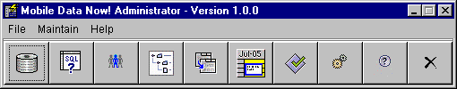

The Mobile Data Now Administrator is a GUI application that is used to
manage Mobile Data Now (MDN).
The MDN Administrator is used to configure JDBC Drivers and Data Stores
to access your company's databases, define views and queries on that data and
build menus to present that data to your users. See the
How To guide for instructions about how to perform
common tasks and Definitions and Terminology for
an explanation of the terms and terminology used in this documentation.
Also see the Installation and Configuration guide for details on installing MDN and configuring and starting the MDN Server and Servlet.
Before using the Mobile Data Now Administrator you should read the licence agreement, register MDN and get a licence activation key and start the MDN server and set the licence activation key.
Starting the Mobile Data Now Administrator
To start the MDN Administrator choose Mdn Administrator from the Start|Programs|Mobil Data Now menu under Windows, or type mdnadmin from a command shell window under Linux/Solaris.
The administrator will display an error message and fail to start if the MDN Server is not running or if MDN has not been licensed.
Login
When the MDN Administrator application is started you must login with a valid username and password using the Login screen that is displayed when the MDN Administrator starts. The username can be the name of any user defined in the Users and Groups screen. There is a default administrator user with a username of admin and a password of admin that you can use to log in for the first time. It is advisable to change the default password immediately.
The Mobile Data Now Administrator Screen

The MDN Administrator comprises a menu and a button bar. The button bar
provides quick access to the following frequently used operations:
Data Stores ;
Views and Queries ;
Users and Groups ;
Presentation Builder ;
Data Transfers ;
Schedule ;
Mirror Data Stores ;
JDBC Drivers ;
About and
Exit.
Moving the mouse over a button will display a tooltip describing the button's function. Clicking the button will activate the function.
The menus have the following structure:
File - Change Password and
Exit.
Maintain - Data Stores ;
Views and Queries ;
Users and Groups ;
Presentation Builder ;
Data Transfers ;
Schedule ;
Mirror Data Stores and
JDBC Drivers.
Help - About and Help Contents.
The Change Password screen is used
to change the password of the currently logged in user.
The Data Stores screen is used to create or modify data store definitions that define which tables in your company's databases may be accessed by MDN.
The Views and Queries screen is used to define views and queries on the data stores. The views and queries may perform joins across multiple tables within a data store.
The Users and Groups screen is used to create users and groups and define the views and fields available to each group.
The Presentation Builder screen is used to define a set of menus for a given group to allow members of that group to access views and queries.
The Data Transfers screen is used to define data transfers between data stores and mirror data stores.
The Schedule screen is used to schedule data transfers for automatic execution at a later date.
The Mirror Data Stores screen is used to define mirrors to which information in a data store can be transferred using a data transfer.
The JDBC Drivers screen is used to define a JDBC driver which may then be used by MDN to connect to a database.
This function displays an about box detailing the Mobile Data Now Administrator version and copyright information.
Displays help for the MDN Administrator.
Exits the application. All open windows are closed and any unsaved changes are discarded.